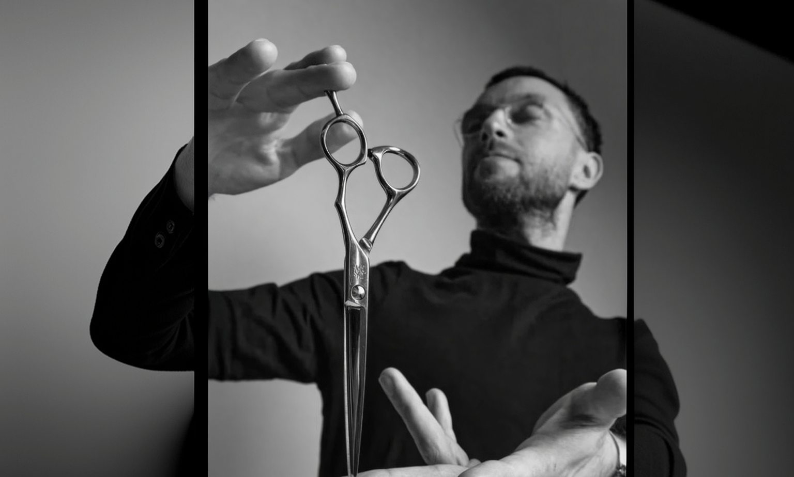
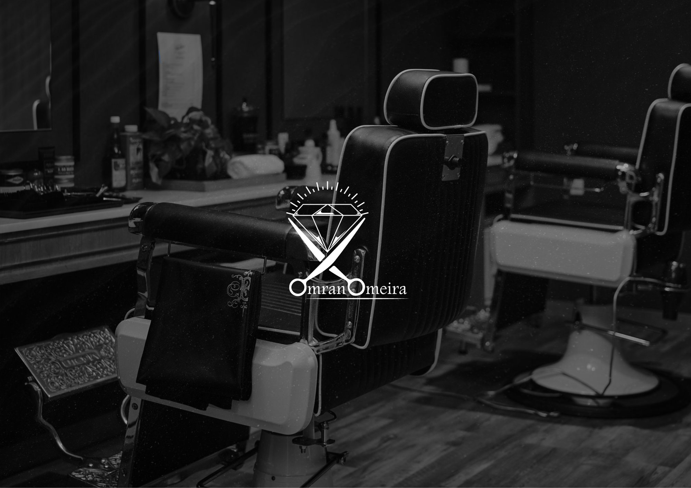
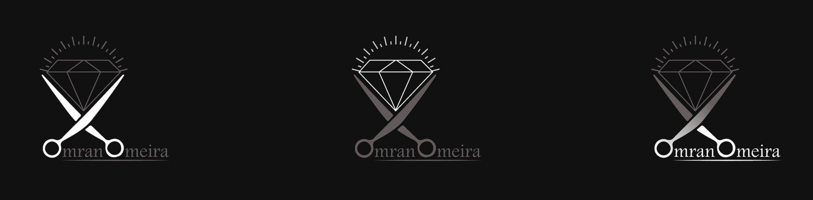
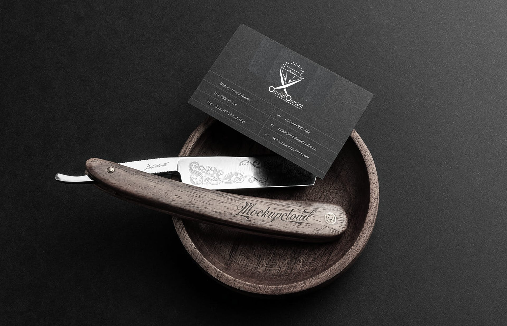
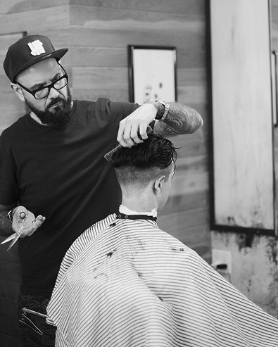
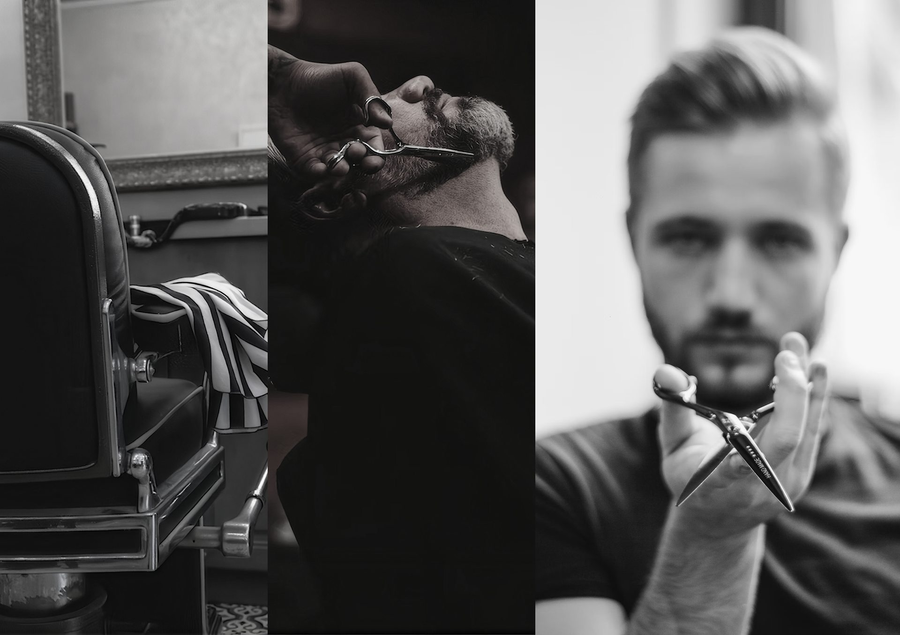

Logo & brand identity
Omran Omeira
Overview
Precision, polished to a shine.
Omran Omeira is a men’s barbershop built on classic craft: sharp cuts, careful shaves and an unhurried ritual. The identity pairs the barber’s essential tool with a symbol of value, presenting every visit as a premium experience — confident, masculine and timeless.
- Logo concept01
- Monochrome palette02
- Brand in use03

The Concept
Crossed scissors rise into a diamond crowned with a sunburst. The scissors stand for the craft, the diamond for the premium experience, and the rays for the confidence every client leaves with.

Scissors & diamond
The blades form the base of the diamond, so tool and gem read as one shape — skill and value, held together in a single mark.
Three finishes
White, grey and a polished silver gradient let the logo sit on dark walls, mirrors, signage and print without ever losing its edge.
Monochrome
No colour, only contrast. A palette of deep black, charcoal and steel lets the gleam of metal and the texture of leather, wood and skin do the talking.
Brand in use
From the business card to the shop itself, the mark is used sparingly and always in silver or white on black — a quiet signature that matches the craft behind the chair.


A ritual, not a routine
Black-and-white photography keeps the focus on hands, tools and texture. It is the visual rule of the brand: no colour, no noise, only the moment of precision.

Sharp lines. Steady hands.
Next project